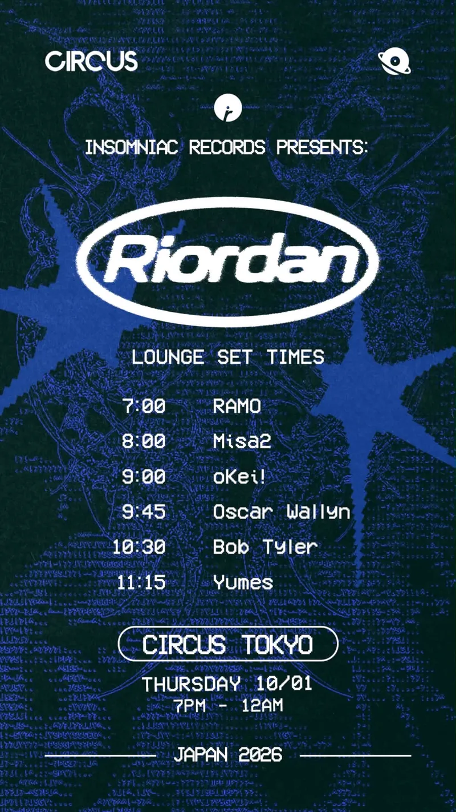
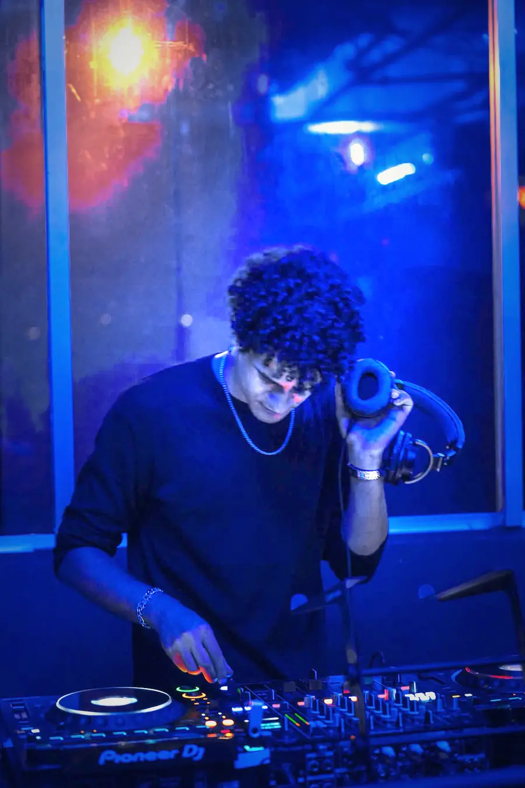
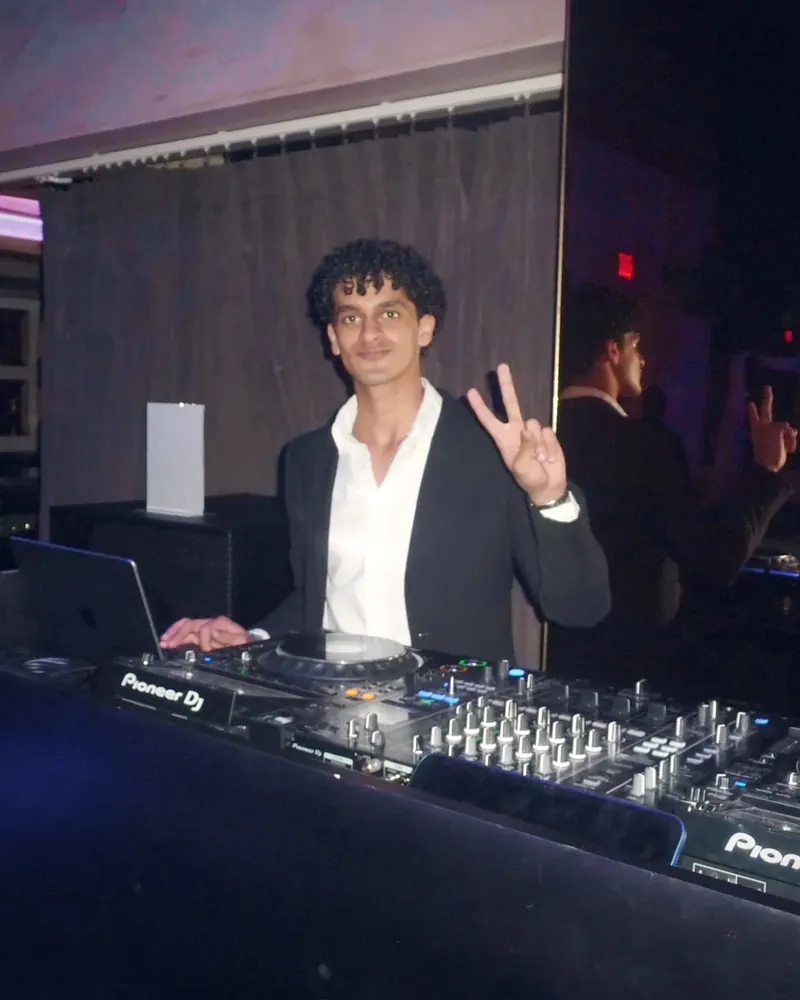
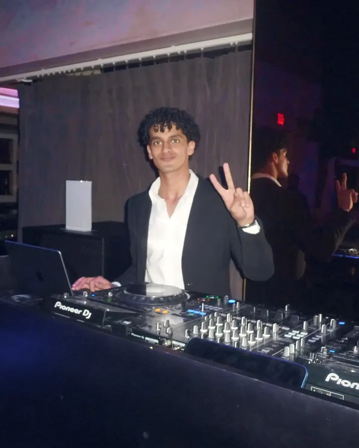
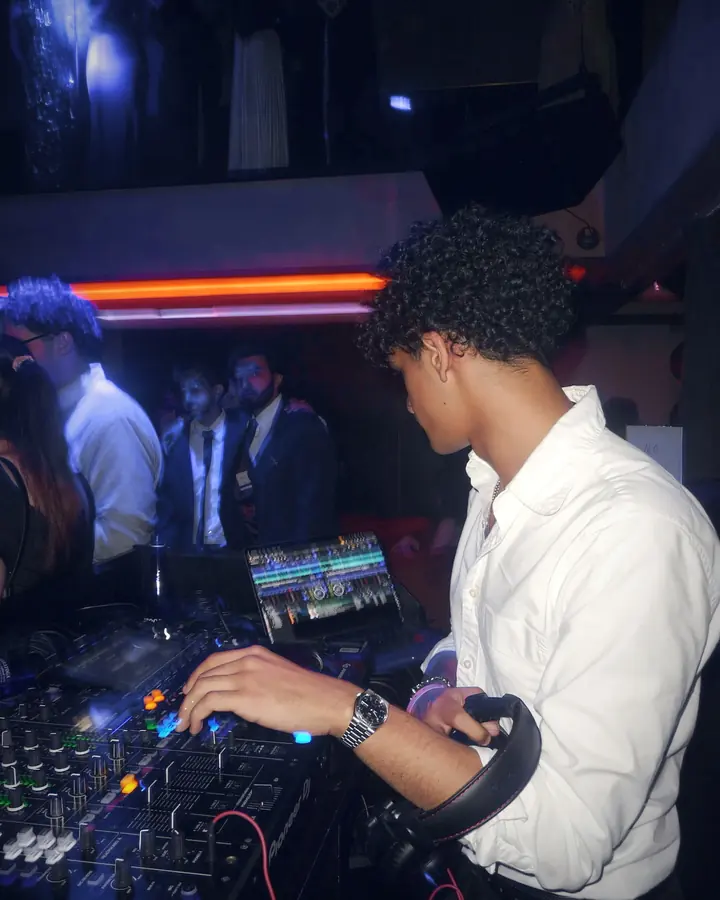
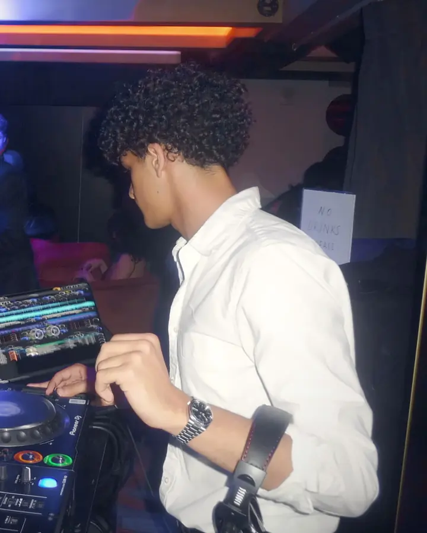
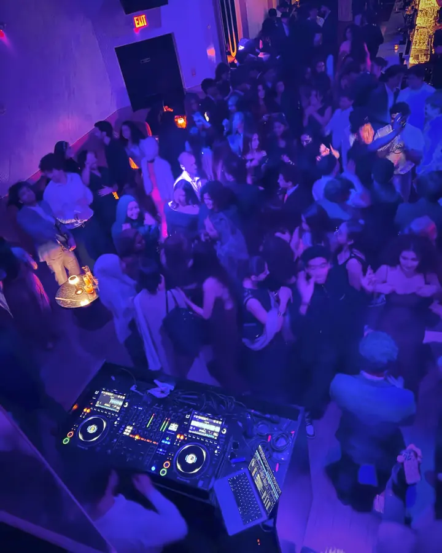

2026.10.01THU木
Circus Tokyo
Insomniac Records presents Riordan


NYCTOKYO
2026.10.01THU木
Insomniac Records presents Riordan

Recorded 2024. House.2024年収録。ハウス。
Player not loading? Open SoundCloud above.再生されない場合は、上のSoundCloudからどうぞ。

RAMO is a New York DJ now based in Tokyo. He has played house and afro house for two years, mainly at Casa Cecé's in NYC, plus bars, college parties and private events.
On October 1, 2026 he opened at Circus Tokyo for Insomniac Records presents Riordan. He plays house, tech house, UK garage, techno and afro house.
RAMO（ラモ）は、ニューヨークで活動し、現在は東京を拠点とするDJ。NYCで2年間ハウスとアフロハウスをプレイし、Casa Cecé’sを中心に、バーや大学のパーティー、プライベートイベントにも出演してきた。
2026年10月1日、Circus Tokyo「Insomniac Records presents Riordan」でオープニングを担当。ハウス、テックハウス、UKガラージ、テクノ、アフロハウスをプレイする。
RAMO is a New York DJ now based in Tokyo. He has played house and afro house in NYC for two years. His main room there was Casa Cecé's. He has also played bars, college parties and private events.
On October 1, 2026 he opened at Circus Tokyo for Insomniac Records presents Riordan.
He plays house, tech house, UK garage, techno and afro house, and can go open format when a night needs it. He plays on CDJ-3000s, prepares his sets in rekordbox and plays from USB. He also makes afro house edits in Ableton, Drake edits among them.
RAMOはニューヨークで活動し、現在は東京を拠点とするDJ。NYCで2年間、ハウスとアフロハウスをプレイしてきた。メインの現場はCasa Cecé’s。バー、大学のパーティー、プライベートイベントにも出演している。
2026年10月1日、Circus Tokyo「Insomniac Records presents Riordan」でオープニングを担当。
ハウス、テックハウス、UKガラージ、テクノ、アフロハウスをプレイし、イベントに合わせてオープンフォーマットにも対応する。機材はCDJ-3000。セットはrekordboxで準備し、USBでプレイする。Abletonでアフロハウスのエディットも制作しており、Drakeのエディットもある。




2–3× CDJ-3000 / DJM-900NXS2, DJM-A9 or DJM-V10 / Booth monitor / rekordbox USB CDJ-3000 2〜3台 / DJM-900NXS2・DJM-A9・DJM-V10のいずれか / ブースモニター / rekordbox対応USB
Email or Instagram DM. Open for opening sets and side floors. メールまたはInstagramのDMまで。オープニング、サブフロアの枠を探しています。
enygmabiz